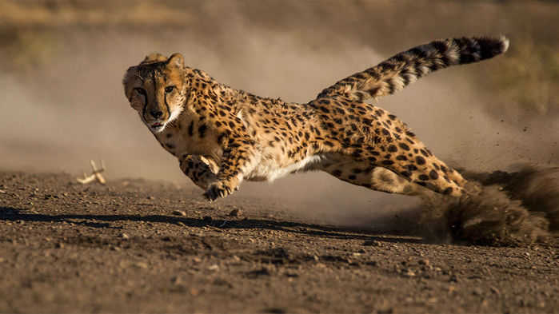
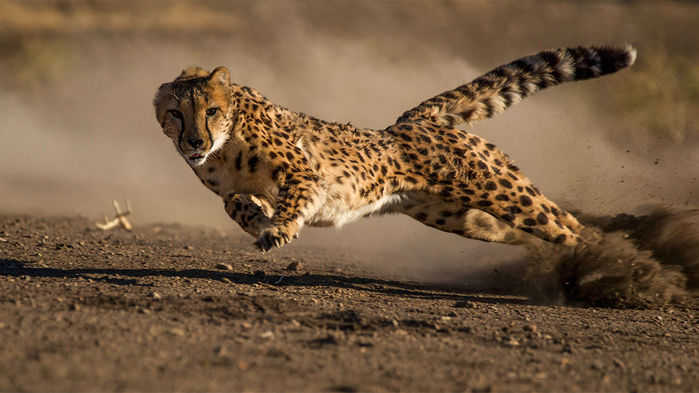
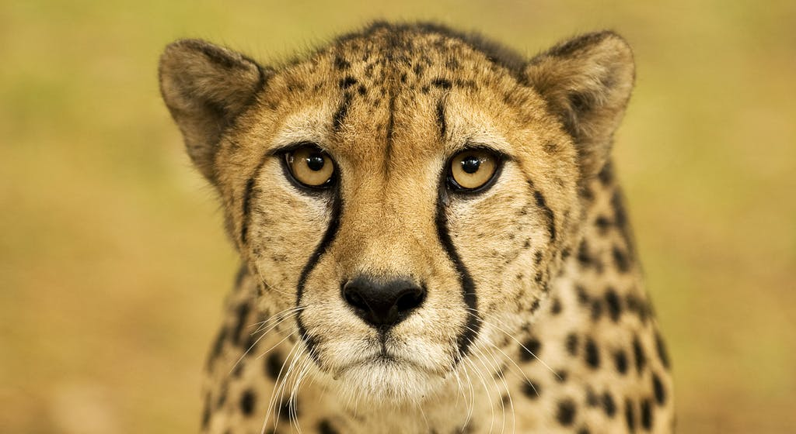
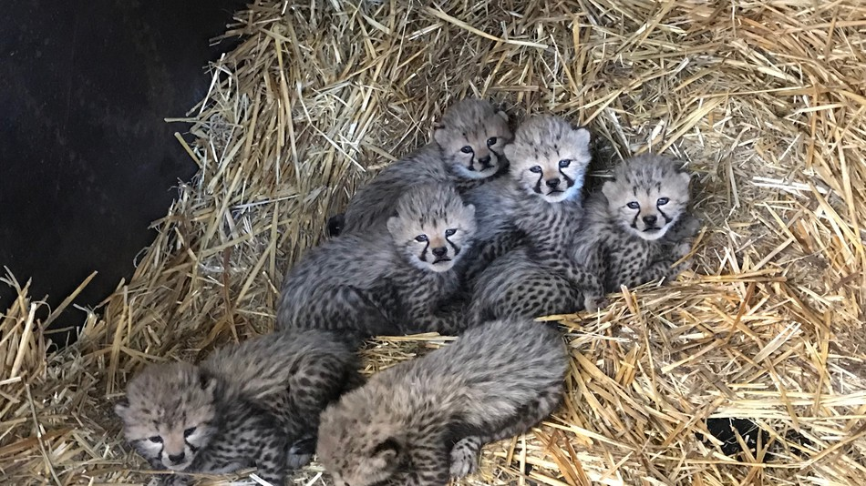
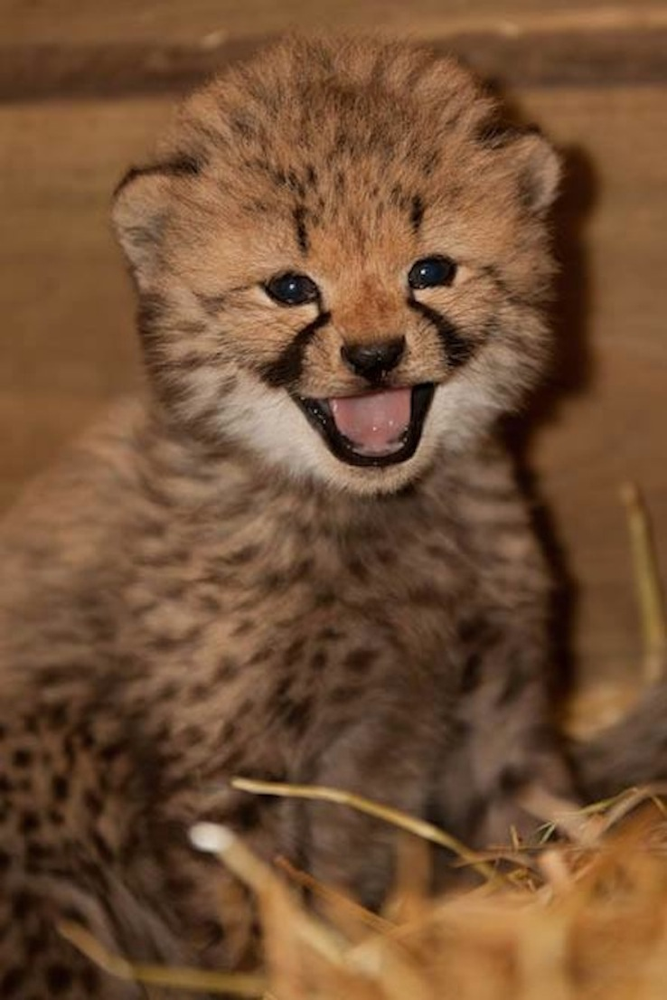

WELCOME TO BRANDON AND KLAJDI's WEBSITE
This Website is Dedicate to our friend the fastest land animal The Cheetah.
The cheetah(Acinonyx jubatus), historically found between the continents of Africa and Asia,
Are the Fastest land Animals in the world. reaching speeds of up to 70 miles per hour. Cheetahs have 2000-3000 spots
which help them camouflage well in their habitat. Cheetahs are carnivores whith his favorite catch being the thomson's
gazelle which just happens to reach a whopping 60 MPH top speed as well. So a cheetah can run really fast and loves to
catch animals that also run really fast. Male cheetahs like to chill together often times with 2-3 brothers. Females are
entirely solitary unless with their cubs. Cheetahs reproduce quite young. Males at the Age of 1 and females at the age of 2.
Females can have from 2 to 8 cubs in a sigle time. As majestic as these animals are there are only about 10,000 of them left
in the wild. Cheetahs face problems not only from poachers, but also climate change pushes the gazelle they eat further inland
so the chetah has to travel a lot further to reach his food. Thanks to co-ops such as the WWf, and concentrated governmental
efforts where the cheetahs live, conservation effrots are in success. The cheetah is classified as Vulnerable by the IUCN
Red List fo endangered species. to learn more about the cheetah, click on the links below.
WWW.NATIONALGEOGRAPHIC.COM
WWW.AWF.ORG
WWF.PANDA.ORG
THE_KING_OF_SPEED
 

To find out how YOU can help this species, click the link below.
YOUCANHELP


THANK YOU FOR YOUR VISIT

CITED_PAGE